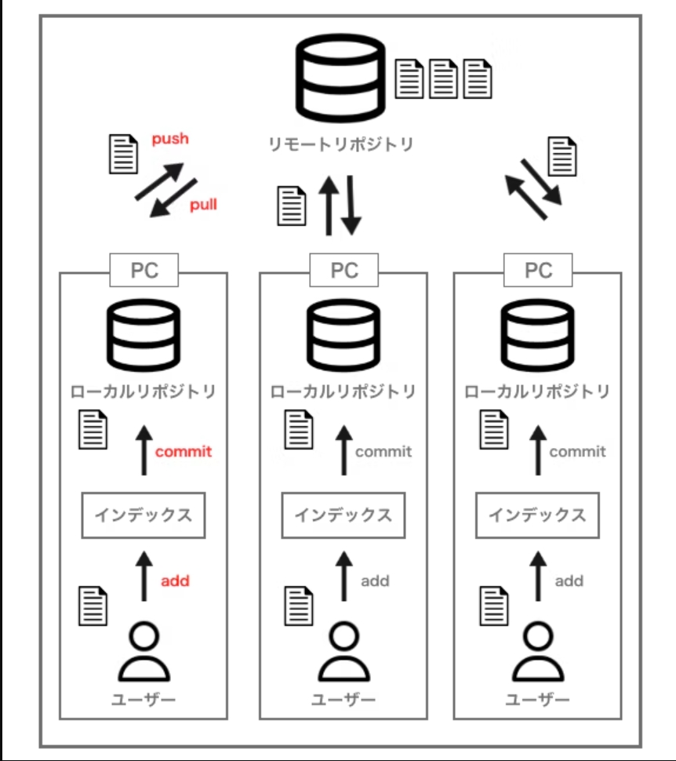
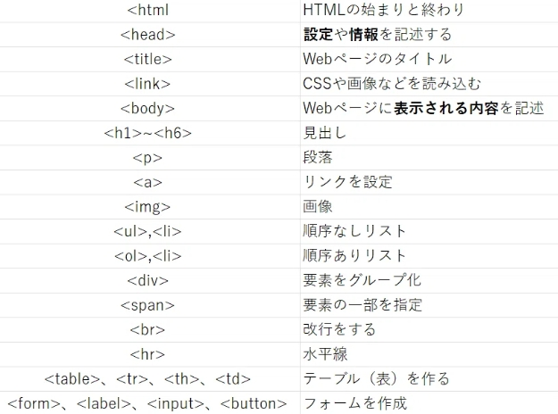

■git
gitとは分散型バージョン管理システム（ファイルのバージョン管理を簡単にできるツール）である。
バージョン→ファイルなどを更新した履歴
gitを知るうえで重要なファイルや履歴を保存するためのストレージである"リポジトリ"
リポジトリにはリモートリポジトリ（webサーバー上で各ユーザー共通）とローカルリポジトリ（個人間のpc上）の2種類がある。
gitで4つのアクション
- add→コミットを行う前の準備みたいなもので、ファイルを編集したことをインデックスに登録する作業。履歴を残す前の仮登録のようなもの
- commit→addを行った後、自分のローカルリポジトリに作業内容の履歴を保存する作業。ファイルを編集した内容・日時・作業者を記録したファイルが生成されて保存
- pull→共有しているリモートリポジトリに保存されているファイルの中で、自分のローカルリポジトリに存在しないファイルや、他のユーザーが更新したファイルのみをダウンロードする機能
- push→自分のローカルリポジトリにあるファイルをリモートリポジトリにアップして保存する作業。

■html
HTML(HyperText Markup Language)はウェブページの土台を作成するための言語である。デザインやレイアウトをはCSSを用いて行う。
プログラミン言語ではなくマークアップ言語（文章やデータの「構造」や「意味」を表現するために「タグ」を用いて記述する言語）
と呼ばれ、「タグ」という部品を使って作成していく。
タグの種類

参考画像リンク
他のタグは
ここから
参考文献
【初心者向け】GITとは何か？GITの概念を解説
世界一わかりやすいHTML講座！初心者向けHTML入門
【初心者向け】HTMLタグ一覧！80タグの用途を解説（コピペOKサンプルコード付き）